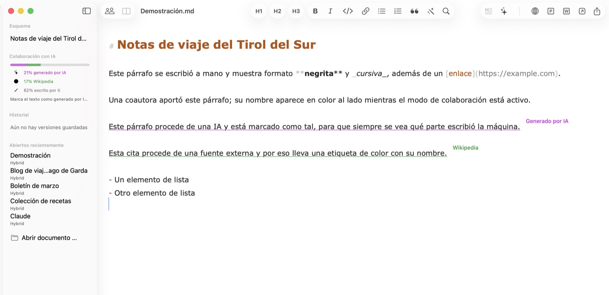
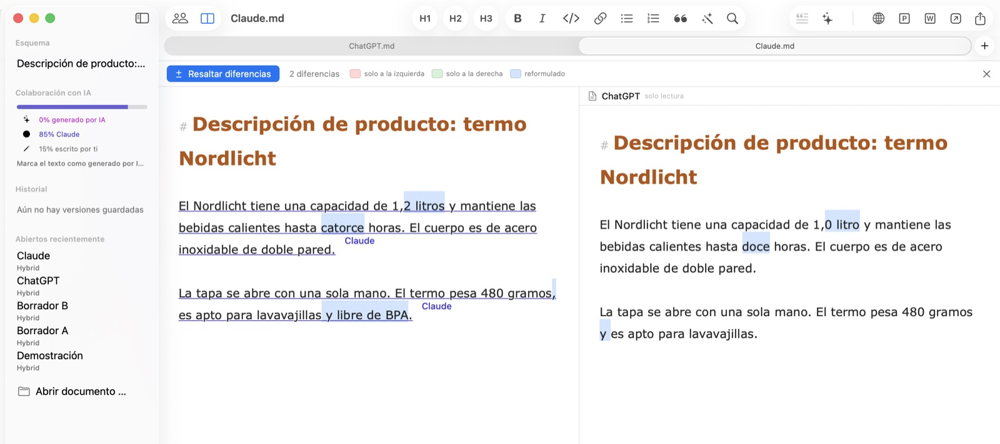
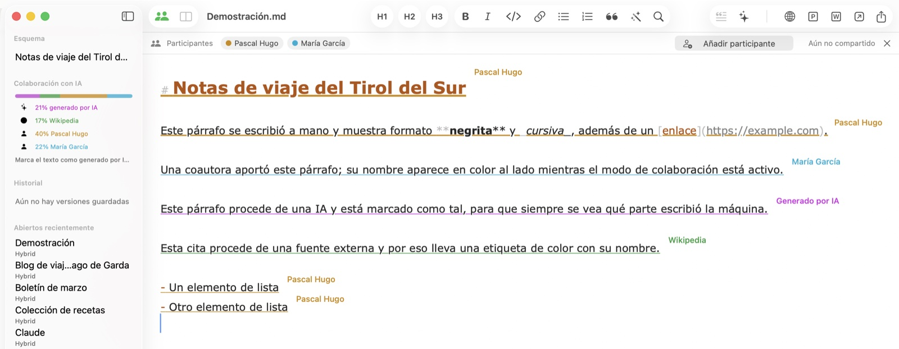
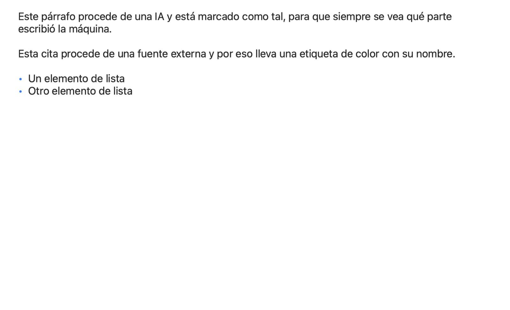

Publicación online con un clic
Copia tu documento como HTML formateado con imágenes integradas — listo para pegar en WordPress y otros CMS. Las imágenes aparecen exactamente en su sitio, no como enlaces rotos.
Hybrid para macOS
Hybrid registra de dónde viene cada pasaje: escrito por ti, generado por una IA, citado de una fuente con nombre o aportado por un colega. Hecho para quienes publican — en PR, marketing, agencias y redacciones.
Muy pronto Hybrid llegará pronto a iPhone y iPad.

Cada pasaje lleva su origen — y lo conserva al guardar, compartir y editar en equipo. El registro viaja dentro de un archivo .md normal que cualquier otro editor puede abrir; las etiquetas flotan sobre el texto y no aparecen en ningún export.
Este párrafo lo escribiste tú — todo lo que tecleas cuenta automáticamente como tuyo.
Este pasaje viene de una IA y está marcado, para que la parte de la máquina siga siendo visible.Generado por IA
Esta cita procede de una fuente externa y lleva su nombre como pequeña etiqueta.Wikipedia
La promesa central: lo que alguien aportó sigue atribuido a esa persona — incluso si después se le retira el acceso. La procedencia registra quién escribió, no quién tiene permiso ahora.
La misma pregunta fue a dos herramientas de IA y las respuestas parecen iguales a primera vista. Hybrid resalta exactamente en qué difieren y cuenta las diferencias. Asigna a cada respuesta el nombre de su herramienta como fuente y, incluso después de fusionarlas, sabrás qué frase vino de cuál.

Comparte un documento por iCloud Drive y cada pasaje muestra el nombre de su autor como etiqueta de color. Los cambios de los demás aparecen en segundos, sin que el cursor ni el scroll salten. Se invita con la ventana de compartir de Apple — Contactos, Mail o Mensajes.

Títulos, listas, tablas reales e imágenes integradas, renderizados como los verán tus lectores. La vista previa sigue tu escritura en vivo en su propia ventana — ideal para revisar un texto antes de llevarlo al CMS.

Copia tu documento como HTML formateado con imágenes integradas — listo para pegar en WordPress y otros CMS. Las imágenes aparecen exactamente en su sitio, no como enlaces rotos.
Envía tu texto con un clic a ChatGPT, Claude, Perplexity o la app que elijas. Marca los pasajes de IA y consulta la parte de cada participante en la barra lateral.
Los documentos son archivos .md puros que cualquier editor puede abrir. Todo lo que Hybrid sabe además — procedencia, versiones, autores — viaja en un único comentario invisible.
Arrastra una foto al texto: se redimensiona, se convierte y se referencia en Markdown. Un archivo CSV o Excel se convierte en una tabla formateada.
Hybrid guarda estados intermedios mientras escribes. Cada estado se puede ver y restaurar — nada se pierde, aunque cambies de opinión.
Bloquea la app al instante o automáticamente tras inactividad. Bloqueado significa bloqueado: ventanas ocultas, exports desactivados — hasta que Touch ID vuelva a abrir.
Allí donde un texto nace de varias manos — humanas y de máquina —, Hybrid mantiene claros los orígenes.
Redacta notas de prensa con apoyo de IA y mantén cada cita verificable. Cuando pregunten qué escribió un humano, tu documento tiene la respuesta — transparencia como método, no como apaño.
Muchas plumas, una sola voz. Ve la parte de cada uno, compara borradores lado a lado y entrega HTML limpio a cualquier CMS — todo el flujo de contenido en tu Mac.
Separa tus propias palabras de las fuentes y de las sugerencias de la IA. Las fuentes con nombre quedan unidas a cada párrafo — a través de correcciones, versiones y edición compartida.
Los informes co-escritos con IA necesitan un rastro auditable. Hybrid registra quién — o qué — escribió cada pasaje, y el bloqueo con Touch ID mantiene cerrados los borradores confidenciales.
Compara salidas de modelos lado a lado, mide la parte de IA de un documento y guarda prompts y resultados como Markdown limpio — legible en cualquier herramienta.
De Markdown al CMS con un clic: HTML formateado con las imágenes exactamente donde deben estar. Además, export a PDF, Word y Markdown puro.
Hybrid llegará pronto a iOS. Los mismos documentos, la misma procedencia — para llevar. Hasta entonces, tus archivos son Markdown puro en iCloud Drive, legibles en cualquier dispositivo.
Hybrid está disponible en nueve idiomas: español, inglés, alemán, francés, italiano, portugués, neerlandés, japonés y chino simplificado — y este sitio también.
Hybrid para Mac — el editor Markdown para personas, IA y todo lo que publicas.
macOS 13 (Ventura) o posterior · Apple Silicon & Intel